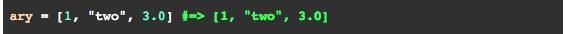
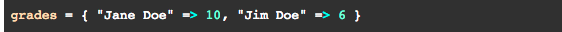

Arrays and Hashes
4/26/15
In any coding language it is essential to store certain information for the purpose of accessing this information in the future. One way common way of storing information in the form of strings or integers is by using an array. Arrays always start by defining a variable that will hold the values of the array and then setting this variable to values within two brackets ([]). These values can either be integers or strings and to access these individual elements you must call the array and establish a parameter that takes an integer value. For example if I want the first element my_array, I would access this element by return my_array(0). The first element in an array hold the zeroth slot so when counting through this array you start from 0,1,2,... etc. An example of an array can be seen below.
A hash is very similar to an array such that they are capable of storing strings and integers. The differ however in the ways you can access them. A hash contains keys that are associated with values meaning that when you would like to access an element within a hash you can call on the varables key anywhere in your code. The syntax in hashes are also different from arrays in the sense that in order to access a key associated with a value you would call the variable my_hash(key) and this would return the value. Alos when creating a hash you set a variable equal to a list of keys and values within curly brackets ({}). An example of the syntax and functionality of a hash can be seen below.
